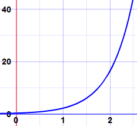
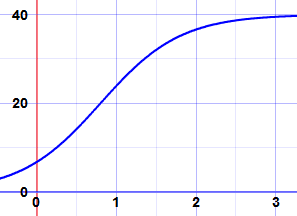

Separation of Variables
Separation of Variables is a special method to solve some Differential Equations
A Differential Equation is an equation with a function and one or more of its derivatives:

Example: an equation with the function y and its
derivative dy dx
When Can I Use it?

Separation of Variables can be used when:
All the y terms (including dy) can be moved to one side of the equation, and
All the x terms (including dx) to the other side.
Method
Three Steps:
- Step 1 Move all the y terms (including dy) to one side of the equation and all the x terms (including dx) to the other side.
- Step 2 Integrate one side with respect to y and the other side with respect to x. Don't forget "+ C" (the constant of integration).
- Step 3 Simplify
Example: Solve this (k is a constant):
dy dx = ky
Step 1 Separate the variables by moving all the y terms to one side of the equation and all the x terms to the other side:
Step 2 Integrate both sides of the equation separately:
C is the constant of integration. And we use D for the other, as it is a different constant.
Step 3 Simplify:
We have solved it:
y = cekx
This is a general type of first order differential equation which turns up in all sorts of unexpected places in real world examples.
We used y and x, but the same method works for other variable names, like this:
Example: Rabbits!
The more rabbits you have the more baby rabbits you will get. Then those rabbits grow up and have babies too! The population will grow faster and faster.
The important parts of this are:
- the population N at any time t
- the growth rate r
- the population's rate of change dN dt
The rate of change at any time equals the growth rate times the population:
dN dt = rN
But hey! This is the same as the equation we just solved! It just has different letters:
- N instead of y
- t instead of x
- r instead of k
So we can jump to a solution:
N = cert
And here is an example, the graph of N = 0.3e2t:

Exponential Growth
There are other equations that follow this pattern such as continuous compound interest.
More Examples
OK, on to some different examples of separating the variables:
Example: Solve this:
dydx = 1y
Step 1 Separate the variables by moving all the y terms to one side of the equation and all the x terms to the other side:
Step 2 Integrate both sides of the equation separately:
We integrated both sides in the one line.
We also used a shortcut of just one constant of integration C. This is perfectly OK as we could have +D on one, +E on the other and just say that C = E−D.
Step 3 Simplify:
Note: This is not the same as y = √(2x) + C, because the C was added before we took the square root. This happens a lot with differential equations. We cannot just add the C at the end of the process. It is added when doing the integration.
We have solved it:
y = ±√(2(x + C))
A harder example:
Example: Solve this:
dydx = 2xy1+x2
Step 1 Separate the variables:
Multiply both sides by dx, divide both sides by y:
1y dy = 2x1+x2dx
Step 2 Integrate both sides of the equation separately:
∫1y dy = ∫2x1+x2dx
The left side is a simple logarithm, the right side can be integrated using substitution:
Step 3 Simplify:
It is already as simple as can be. We have solved it:
y = k(1 + x2)
An even harder example: the famous Verhulst Equation
Example: Rabbits Again!
Remember our growth Differential Equation:
dNdt = rN
Well, that growth can't go on forever as they will soon run out of available food.
A guy called Verhulst included k (the maximum population the food can support) to get:
dNdt = rN(1−N/k)
The Verhulst Equation
Can this be solved?
Yes, with the help of one trick ...
Step 1 Separate the variables:
Step 2 Integrate:
∫1N(1−N/k)dN = ∫ r dt
Hmmm... the left side looks hard to integrate. In fact it can be done with a little trick from Partial Fractions ... we rearrange it like this:
Now it is a lot easier to solve. We can integrate each term separately, like this:
(Why did that become minus ln(k−N)? Because we are integrating with respect to N.)
Step 3 Simplify:
We are getting close! Just a little more algebra to get N on its own:
And we have our solution:
N = k1 + Ae−rt
Here is an example, the graph of 401 + 5e−2t

It starts rising exponentially,
then flattens out as it reaches k=40